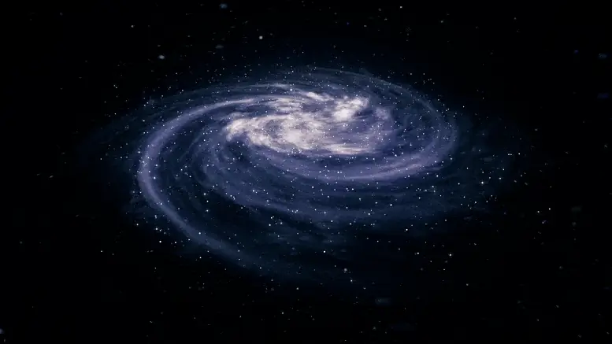
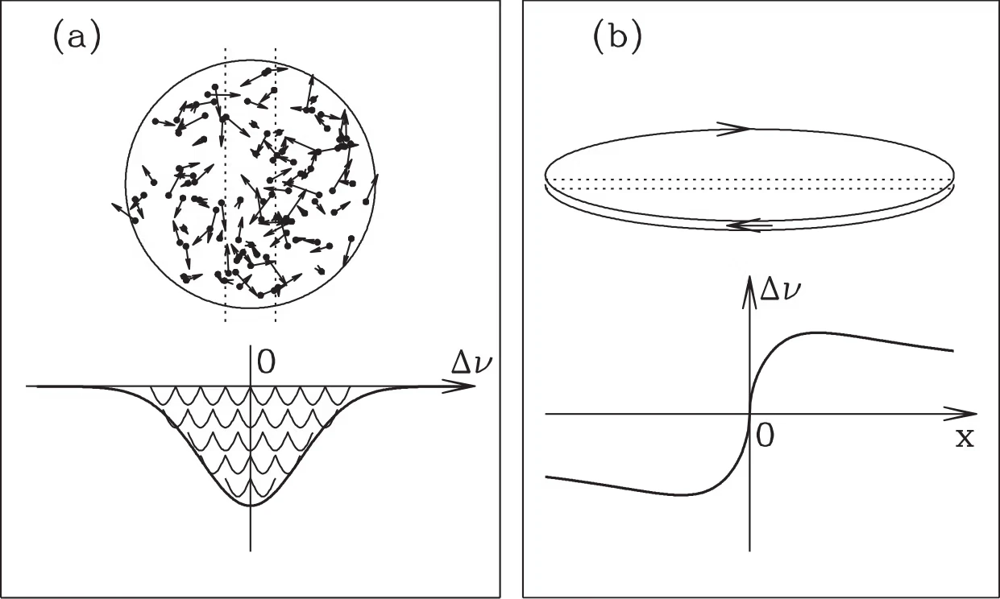
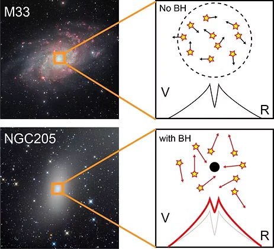
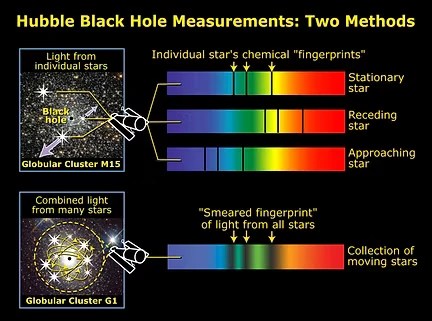
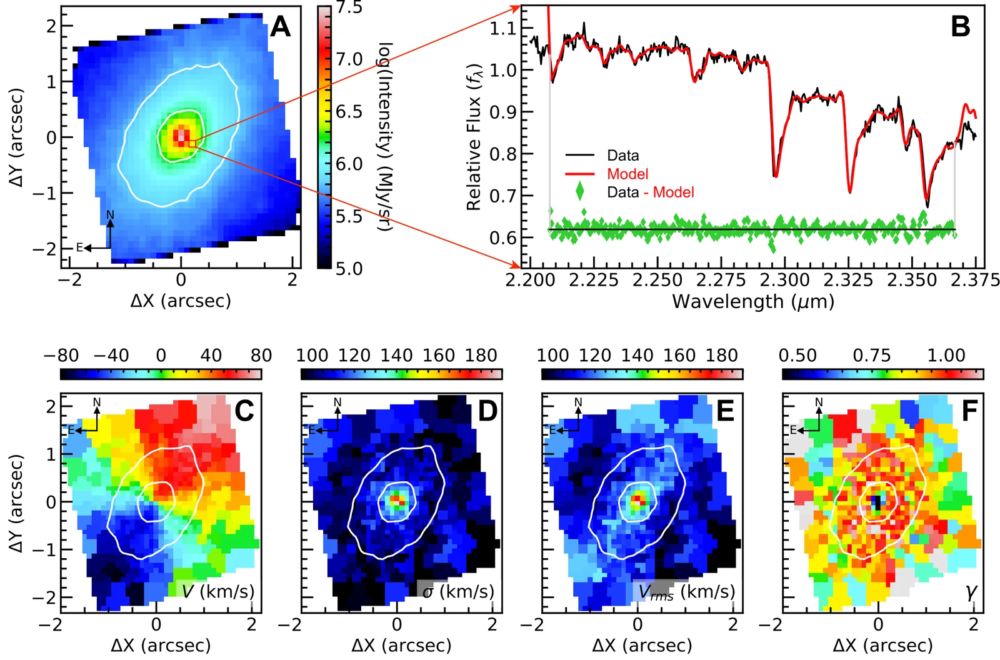
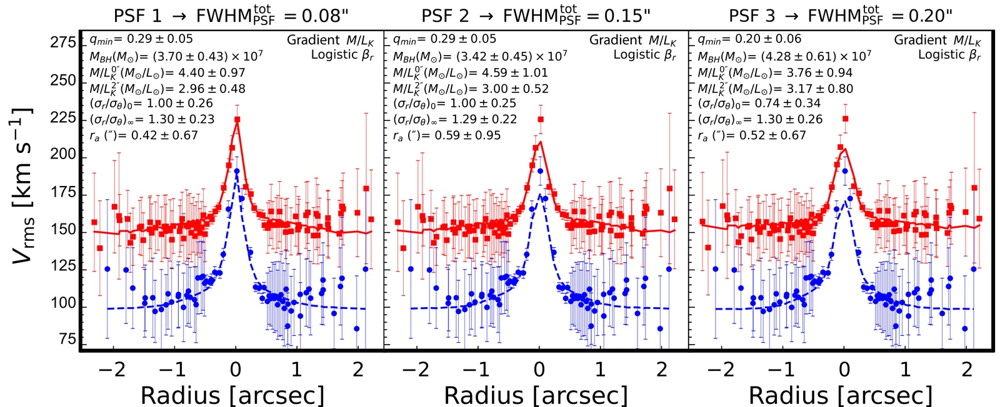
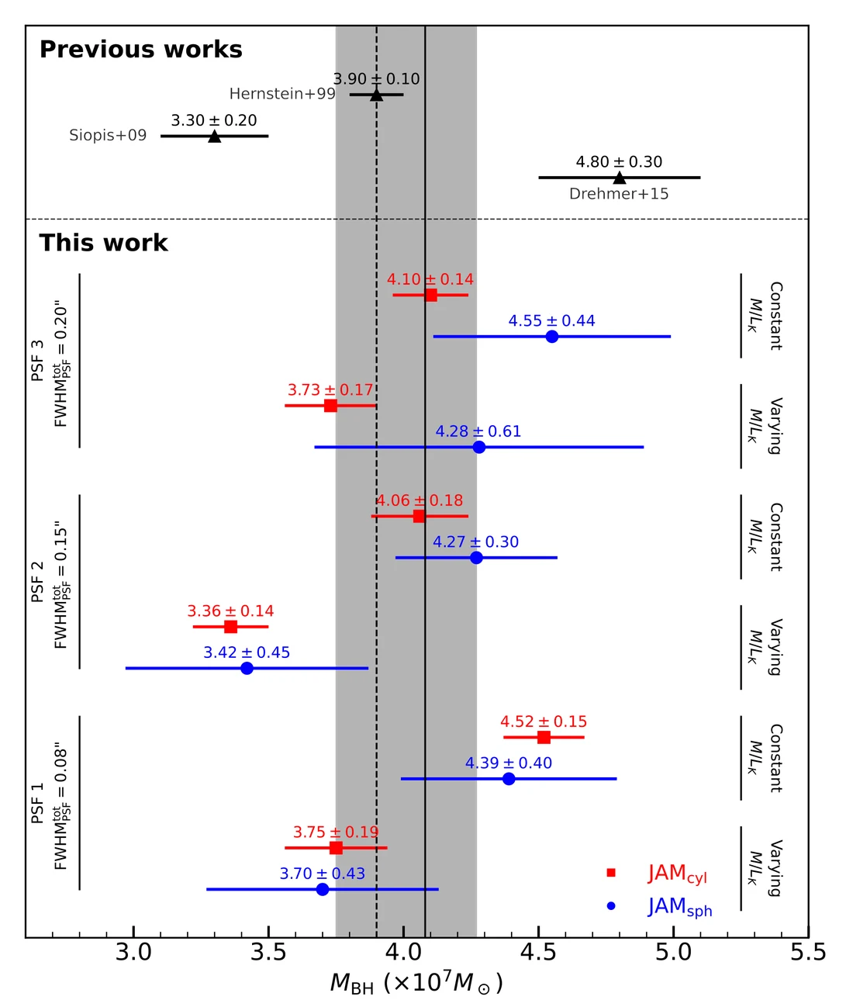
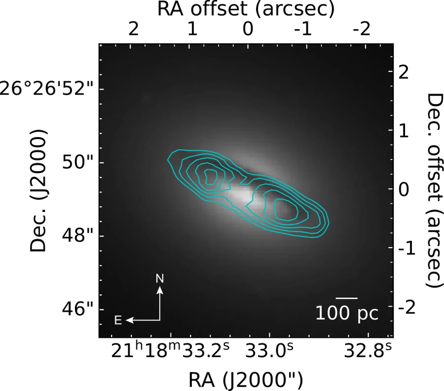
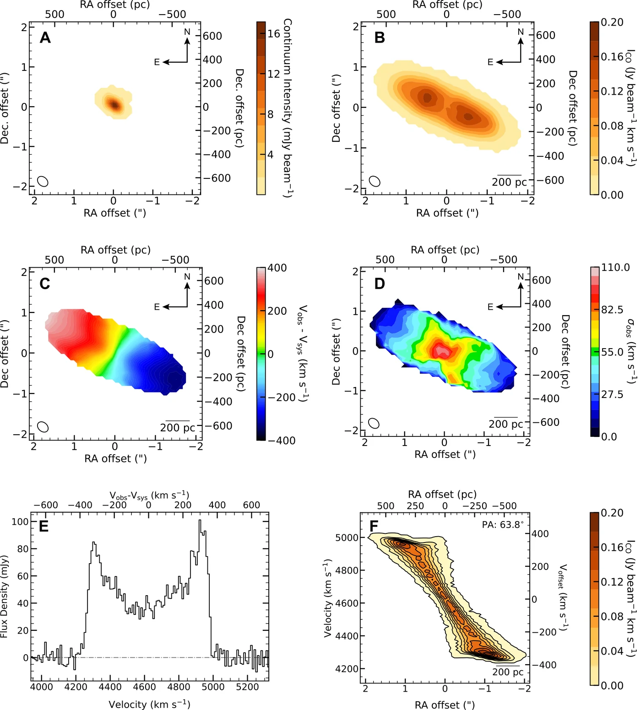
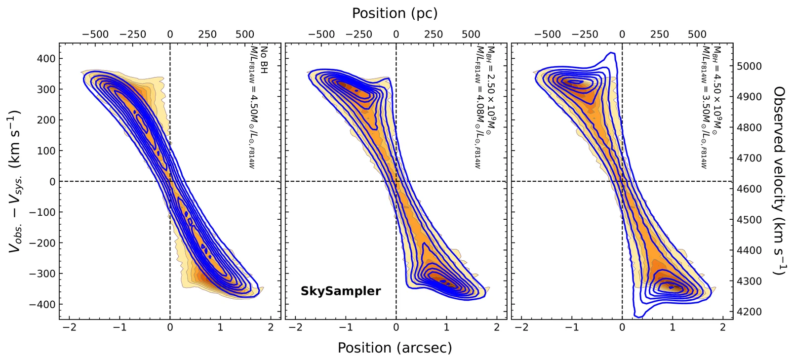

Massive Black Holes Across the Mass Spectrum
Weighing black holes from about 107 to a few 109 M☉ today, and preparing to reach the intermediate-mass regime with the ELT, using two complementary dynamical tracers: stars and cold molecular gas.
Overview
Known massive black holes span roughly eight decades in mass, but the census is far from uniform. The interval between about 102 and 105 M☉ — the intermediate-mass black holes — remains almost empty, not necessarily because such objects are rare but because their gravitational sphere of influence subtends only a few tens of milliarcseconds even in the nearest dwarf galaxies, nuclear star clusters and globular clusters. At the opposite extreme, the most massive black holes in brightest cluster galaxies probe the limits of accretion and merger-driven growth. Because different mass ranges are traditionally studied with different techniques — stellar dynamics, cold-gas dynamics, reverberation mapping, single-epoch AGN scaling — systematic offsets between methods can easily masquerade as physical structure in the mass function. Applying one carefully controlled dynamical framework across the full spectrum is therefore essential.
Measuring Black Hole Masses Dynamically
A black hole can be weighed directly only where its gravity dominates the motions of the surrounding matter, inside the sphere of influence $r_{\rm SOI} = G M_{\rm BH}/\sigma^2$, where $\sigma$ is the stellar velocity dispersion of the host. The central observational challenge is angular resolution: the sphere of influence must be resolved, or nearly so, and it shrinks rapidly with decreasing black hole mass and increasing distance. Our programme uses two complementary tracers of the central potential, stars and cold molecular gas, and models each with a well-tested forward-modelling framework.
Stars and gas in a galaxy move in two ways: ordered rotation and random motion. Both leave an imprint on the spectrum through the Doppler effect. Rotation shifts spectral lines by an amount that changes with position across the galaxy, while random motions broaden the lines, and the line width measures the velocity dispersion $\sigma$ (Fig. 1). Close to a massive black hole, stars and gas must move faster to stay in orbit, so rotation and dispersion both rise sharply toward the centre (Fig. 2). Integral-field spectroscopy records a spectrum in every spatial pixel, turning this signature into two-dimensional maps that dynamical models can fit.




| 01 · Stellar kinematics | 02 · Molecular gas | |
|---|---|---|
| Tracer | Stellar absorption lines, mainly the CO band heads at ~2.3 µm | $^{12}$CO(2–1) line emission from a circumnuclear gas disk |
| Data | JWST/NIRSpec IFU; ELT/HARMONI (simulated) | ALMA high-resolution interferometry |
| Model | Jeans Anisotropic Models (JAM) + MGE mass model | KinMS forward model of the full 3D data cube |
| Strengths | Stars exist in every galaxy; near-infrared data see through nuclear dust | Cold gas moves on near-circular orbits, so its kinematics are simple and very precise |
| Challenges | Degeneracies with orbital anisotropy and mass-to-light ratio; AGN continuum contamination | Requires a regularly rotating, relaxed gas disk; turbulence and non-circular motions |
Method 01
Stellar Kinematics with Jeans Anisotropic Models
How it works
We start from high-resolution imaging, mainly from HST, and describe the galaxy's surface brightness with a Multi-Gaussian Expansion (MGE), which can be deprojected analytically into a three-dimensional stellar density. Jeans Anisotropic Models (JAM) solve the axisymmetric Jeans equations for this density plus a central point mass, and predict the second velocity moment $V_{\rm rms} = \sqrt{V^2 + \sigma^2}$ on the sky after convolution with the instrumental point-spread function. The model is then compared with the observed two-dimensional kinematics, and the free parameters (black hole mass $M_{\rm BH}$, stellar mass-to-light ratio $M/L$, orbital anisotropy and inclination) are constrained within a Bayesian framework using Markov chain Monte Carlo sampling.
For nearby nuclei we use the JWST/NIRSpec integral-field unit. In the near-infrared, the stellar CO band-head absorption features at ~2.3 µm, a “gold-standard” tracer, penetrate the obscuring nuclear dust, and the spectra let us separate the stellar light from the non-thermal AGN continuum before extracting the kinematics with pPXF. To treat systematic uncertainties honestly, we do not rely on the formal errors of a single preferred model. Instead we fit an ensemble of models that vary the point-spread function, the $M/L$ profile and the anisotropy assumptions, and quote the ensemble median and spread.


Results with JWST/NIRSpec
The first dynamical mass for this black hole from NIRSpec stellar kinematics, which easily resolve its sphere of influence. The result is consistent with the $M_{\rm BH}$–$\sigma$ and $M_{\rm BH}$–$M_\star$ relations and settles a long-standing inconsistency between emission-line estimates and the $M_{\rm BH}$–$\sigma$ prediction. It also shows that NIRSpec can detect black holes of $\approx 5\times10^6\,M_\odot$ in galaxies within 5 Mpc with $\sigma \approx 100$ km s$^{-1}$.
NGC 4258 is the benchmark for extragalactic black hole masses because its water-maser disk gives an independent, geometric measurement. From an ensemble of 12 JAM models, our stellar-dynamical mass is only 5% larger than, and consistent with, the maser value. This validates JWST/NIRSpec stellar kinematics as a route to robust masses, even in the presence of significant AGN continuum emission.

Despite its proximity, M81 lacked a reliable dynamical mass. Our ensemble of JAM models, spanning different point-spread functions, anisotropies and mass-to-light ratios, shows that a central dark mass unambiguously drives the rise in velocity dispersion. The result provides a reliable anchor point for the black hole–galaxy scaling relations.
Using JWST/NIRSpec stellar kinematics that resolve about one-tenth of the sphere-of-influence radius, we are measuring the mass of the black hole at the upper end of the local mass function.
Looking ahead: the same method on the ELT
Because JAM only needs a mass model and resolved stellar kinematics, the same pipeline can be run end-to-end on simulated observations. We create mock ELT/HARMONI integral-field data cubes with HSIM and mock ELT/MICADO images with SimCADO, analyse them as if they were real data, and ask which black hole masses the ELT will be able to recover.
- Intermediate-mass black holes in nuclear star clusters. From a sample of 44 dwarf galaxies with nuclear star clusters within 10 Mpc, HARMONI can resolve the sphere of influence and recover black hole masses down to ≈0.5% of the cluster mass (AJ 2025).
- Out to 20 Mpc. For FCC 119, one of the faintest dwarfs in the Fornax Cluster, HARMONI can detect the kinematic signature of an IMBH and measure its mass for $M_{\rm BH} \gtrsim 10^5\,M_\odot$ (Universe 2025, lead author). For VCC 1861 in the Virgo Cluster, IMBHs of 5% of the nuclear-cluster mass are detectable (arXiv:2509.03364, lead author, submitted).
- The inner profile of the cluster. Combining MICADO-based mass models with HARMONI kinematics shows how the inner surface-brightness slope of the nuclear star cluster affects the recovered IMBH mass (Universe 2026).
- Beyond the local Universe. For massive quiescent galaxies at $1 \lesssim z \lesssim 2$, MICADO mass models plus HARMONI kinematics recover black hole masses to ~10%, with ~1 h of MICADO imaging and 5–7.5 h of HARMONI integration (MNRAS 2026).
Method 02
Molecular Gas Dynamics with ALMA CO(2–1)
How it works
Many early-type galaxies host a compact disk of cold molecular gas in their nucleus, often visible as a dust lane in HST images. Unlike stars, which move on a wide range of orbits, this gas settles onto nearly circular orbits, so its rotation traces the enclosed mass directly. We observe the $^{12}$CO(2–1) line with ALMA at high angular resolution, ideally with a synthesized beam comparable to or smaller than the black hole's sphere of influence.
Rather than fitting a one-dimensional rotation curve, we forward-model the full three-dimensional ALMA data cube with KinMS. The circular velocity comes from the stellar mass (an MGE model scaled by $M/L$), the molecular gas mass, and the central black hole. The model gas disk, with its own surface-brightness distribution, velocity dispersion, inclination and position angle, is then convolved with the synthesized beam and channelised like the real data. The black hole mass, $M/L$ and disk geometry are constrained with a Bayesian analysis, and we test different prescriptions for the gas distribution to quantify systematic uncertainties.


Results with ALMA
With ALMA Cycle 7 data at a resolution of 0.29″ × 0.22″ (97 × 73 pc2), we still resolve the sphere of influence, whose radius is 1.5 times larger than the resolution element. The mass (3$\sigma$ intervals) is fully consistent with the previous determination, while the $I$-band mass-to-light ratio ($\approx 4.08\,M_\odot/L_\odot$) is 10% lower. The difference comes from an improved galaxy mass model that includes the molecular gas and the extended stellar mass in the outer galaxy, components that earlier models neglected.

Combining archival Cycle 6 and new Cycle 7 data gives a beam of 0.16″ × 0.13″, comparable to the expected sphere of influence. The CO disk rotates regularly and is aligned with the dust lane in HST imaging. The mass is stable across different models of the gas distribution and plausible radial variations of $M/L$. This first robust dynamical mass resolves a long-standing discrepancy between earlier indirect estimates and shows that the exceptionally large velocity dispersion reported in the literature is likely spurious.
A high-precision ALMA molecular-gas mass for the massive elliptical NGC 2513, together with KinMS modelling of the Circinus galaxy. As a next step, our accepted ALMA Cycle 13 programme will cross-calibrate black hole mass methods in Seyfert nuclei using atomic [C I](1–0) gas.
Further Methods
This section is in preparation and will be added here.
This section is in preparation and will be added here.
Summary of Findings
| Galaxy | Method | $M_{\rm BH}$ ($M_\odot$) | Key point |
|---|---|---|---|
| NGC 4736 | NIRSpec + JAM | $(1.60 \pm 0.16)\times10^7$ | First NIRSpec stellar-dynamical mass; resolves an emission-line vs. $M$–$\sigma$ tension |
| NGC 4258 | NIRSpec + JAM | $(4.08^{+0.19}_{-0.33})\times10^7$ | Within 5% of the maser benchmark; validates the method |
| M81 | NIRSpec + JAM | $(4.78^{+0.07}_{-0.10})\times10^7$ | First robust stellar-dynamical mass |
| NGC 4061 | ALMA CO(2–1) | $(1.17^{+0.08}_{-0.10} \pm 0.43)\times10^9$ | First robust dynamical mass; earlier high $\sigma$ likely spurious |
| NGC 7052 | ALMA CO(2–1) | $(2.50 \pm 0.37 \pm 0.8)\times10^9$ | Consistent with earlier mass; improved mass model lowers $M/L$ by 10% |
Taken together, these measurements show that a single, carefully controlled dynamical approach, with ensembles of models to capture systematic uncertainties, can deliver reliable masses from ~107 to a few 109 M☉. Where an independent benchmark exists (the NGC 4258 maser), the stellar-dynamical mass agrees to within 5%. In several galaxies (NGC 4736, M81, NGC 4061), the new masses resolve long-standing discrepancies between earlier estimates. Our ELT simulations show that the same stellar-kinematic method can extend this census down into the intermediate-mass regime.
Literature Review
Progress hinges on how the masses are measured. Stellar-dynamical modelling (Schwarzschild orbit superposition and Jeans anisotropic models) and ionised-gas kinematics were the early workhorses, complemented by the exquisite geometry of nuclear water megamasers where they exist.
More recently, ALMA has opened cold molecular gas as a clean dynamical tracer, resolving regular circumnuclear disks whose rotation pins down the enclosed mass (e.g. Davis et al. 2013; Nguyen et al. 2021). JWST/NIRSpec now pushes spatially resolved stellar kinematics to fainter, more distant nuclei. My own work sits within this multi-tracer effort, cross-calibrating methods on the same targets to expose systematic differences.
Papers in This Theme
- Supermassive Black Hole Mass Measurement in the Spiral Galaxy NGC 4736 using JWST/NIRSpec Stellar KinematicsNguyen, D. D., Ngo, H. N., et al. 2025, A&A, 698, L9doi↗
- Measuring the Central Dark Mass in NGC 4258 with JWST/NIRSpec Stellar KinematicsNguyen, D. D., Ngo, H. N., Cappellari, M., et al. 2026, ApJ, 999, 97doi↗
- The Supermassive Black Hole in the Nearby Spiral Galaxy M81: A Robust Mass from JWST/NIRSpec Stellar DynamicsNguyen, D. D., Le, T. N., Cappellari, M., Ngo, H. N., et al. 2026, ApJ, 1003, 98doi↗
- Resolving One-Tenth of the Sphere-of-Influence Radius: The M87 Supermassive Black Hole Mass from JWST/NIRSpec Stellar KinematicsNgo, H. N., Nguyen, D. D., Cappellari, M., et al., in preparation
- Simulating Intermediate-Mass Black Hole Mass Measurements for a Sample of Galaxies with Nuclear Star Clusters using ELT/HARMONINguyen, D. D., Cappellari, M., Ngo, H. N., et al. 2025, AJdoi↗
- Detecting Intermediate-Mass Black Holes out to 20 Mpc with ELT/HARMONI: The Case of FCC 119Ngo, H. N., Nguyen, D. D., et al. 2025, Universe, 11, 360doi↗
- Extending Simulations of Intermediate-Mass Black Hole Mass Measurements to the Virgo Cluster using ELT/HARMONINgo, H. N., Nguyen, D. D., et al., submittedarXiv↗
- Probing the Effect of the Inner Surface-Brightness Profile of Nuclear Star Clusters on IMBH Mass Measurements using Mock ELT/MICADO and HARMONI ObservationsLe, T. Q. T., Nguyen, D. D., Ngo, H. N., et al. 2026, Universe, 12, 160doi↗
- Extending the Frontier of Spatially Resolved SMBH Mass Measurements to 1 < z < 2 with ELT/MICADO and HARMONINguyen, D. D., Cappellari, M., Le, T. Q. T., Ngo, H. N., et al. 2026, MNRAS, 546, 4doi↗
- ELT High Spatial Resolution IFS Survey of Ultramassive Galaxies: Observational Strategy and First Simulated ResultsNgo, H. N., Nguyen, D. D., Cappellari, M., & Pereira-Santaella, M., Windows on the Universe (proceedings)doi↗
- Revisiting the Supermassive Black Hole Mass of NGC 7052 using High Spatial Resolution Molecular Gas Observed with ALMANgo, H. N., Nguyen, D. D., et al. 2025, ApJ, 992, 211doi↗
- Dynamical Evidence for a Billion Solar-Mass Black Hole in the Galaxy NGC 4061 from ALMA $^{12}$CO(2–1) KinematicsNguyen, D. D., Nguyen, L. Q. T., Gallo, E., Ngo, H. N., et al. 2026, ApJ, 1005, 94doi↗
- A High-Precision Mass Measurement of the Central Black Hole in the Massive Elliptical NGC 2513 with ALMA Molecular Gas DynamicsHarrisberg, S.-A., Thater, S., Nguyen, D. D., Hacar, A., & Ngo, H. N., in preparation